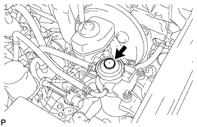

УЗЕЛ ТОПЛИВНОГО БАКА > УСТАНОВКА |
| 1. INSTALL FUEL TANK BREATHER HOSE |
Install the fuel tank breather hose to the fuel sub tank.
| 2. INSTALL FUEL TANK TO FILLER PIPE HOSE |
Install the fuel tank to filler pipe hose to the fuel sub tank.
| 3. INSTALL FUEL TANK VENT TUBE ASSEMBLY |
Install a new gasket and fuel tank vent tube with the 8 screws.
Attach the wire harness clamp.
| 4. INSTALL FUEL SUB TANK SUB-ASSEMBLY |
Set the fuel sub tank on a transmission jack and lift up the transmission jack.
Connect the 2 fuel tank bands with the 4 bolts.
Connect the fuel sender gauge connector.
| 5. CONNECT FUEL TANK BREATHER HOSE |
Connect the fuel tank breather hose to the filler pipe.
| 6. CONNECT FUEL TANK TO FILLER PIPE HOSE |
Connect the fuel tank to filler pipe hose to the filler pipe.
| 7. CONNECT FUEL HOSE |
Connect the fuel evaporation hose, fuel breather hose and 2 fuel hoses.
| 8. INSTALL NO. 2 FUEL TANK PROTECTOR |
Install the No. 2 fuel tank protector with the 5 bolts.
| 9. CONNECT CABLE TO NEGATIVE BATTERY TERMINAL |
| 10. BLEED AIR FROM FUEL SYSTEM |
|  |
Using the hand pump mounted on the fuel filter cap, bleed the air from the fuel system. Continue pumping until the pump resistance increases.
| 11. INSPECT FOR FUEL LEAK |
Check that there are no fuel leaks anywhere in the fuel system after performing maintenance.